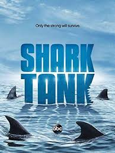
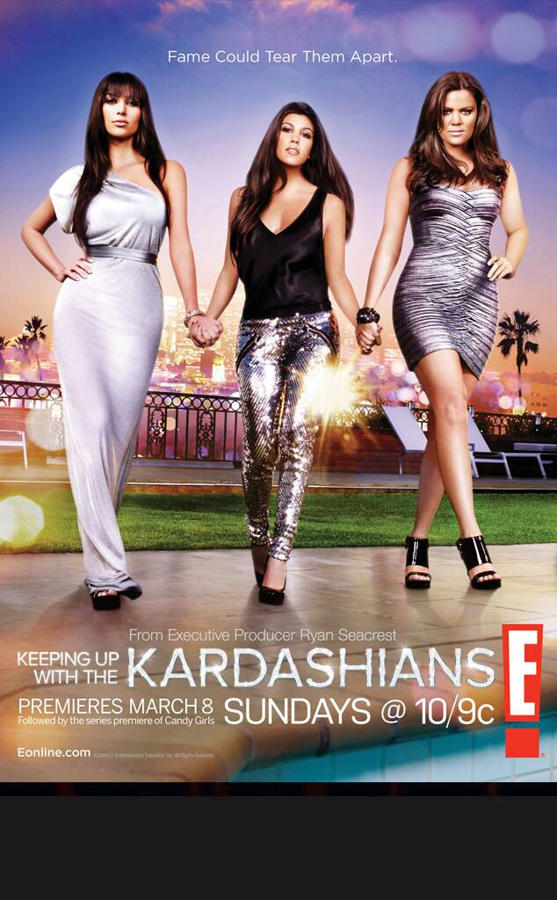

Reality TV Shows
Shark Tank (2009- )
"You have Yourself a Deal."

The Sharks give budding entrepreneurs the chance to secure business deals that could make them millionaires.
Genres : Family,Reality TV,Drama
No. of Seasons: 11
Available on Amazon Prime
Review: 7.6/10 ⭐
Project Runway (2004- )
"They Sew...She Cuts"

Aspiring fashion designers compete for a chance to break into the industry in this reality competition. Each week, a designer is eliminated from the competition after exhibiting their work in front of a judges' panel.
Genres : Drama,Game Show,Reality Tv
No. of Seasons: 18
Available on Amazon Prime
Review: 7.3/10 ⭐
The Real Housewives of Beverly Hills (2010- )
"Life is An Audition,and Honey I'm Getting the Best Part!"

A reality series that follows some of the most affluent women in the country as they enjoy the lavish lifestyle that only Beverly Hills can provide.
Genres : Drama,Reality TV
No. of Seasons: 15
Available on Netflix
Review: 4.8/10 ⭐
Keeping up with the Kardashians (2007- )
"Meet the Crazy, Sexy Kardashian Clan."

A peek inside the exploits and privileged private lives of the blended Kardashian-Jenner family, including sisters Kim, Kourtney, Khloé, Kendall and Kylie.
Genres : Drama,Reality TV,Family
No. of Seasons: 18
Available on Youtube
Review: 2.8/10 ⭐
Back